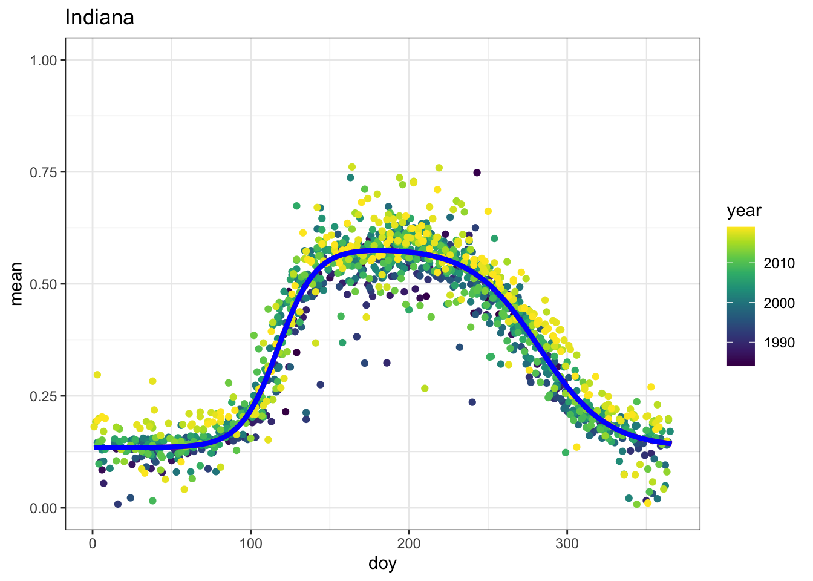

library(tidyverse)
library(tmap)
library(terra)
library(ncdf4)
library(lubridate)
library(viridis)
library(data.table)
library(minpack.lm)Step 17 - An LSP model for EVI2 aggregated over space and time
Bayesian
MCMC
Spatial
MCAR
[tbd]
TODO: Add some explanation.
Some functions.
Code
ReadNcTs <- function(ncfile) {
r <- rast(ncfile)
# Get time
nc_in <- nc_open(ncfile)
dates <- ncvar_get(nc_in, "time")
nc_close(nc_in)
# Assign time to the original image object
if (nchar(dates[1]) == 8) {
fm <- "%Y%m%d"
} else if (nchar(dates[1] == 7)) {
fm <- "%Y%j"
}
time(r) <- as.Date(as.character(dates), tryFormats = fm)
# Reorder the layers by time
r <- r[[order(time(r))]]
# Get map projection
tif <- rast(list.files(dirname(ncfile), ".tif$", full.names = TRUE)[1])
crs(r) <- crs(tif)
return(r)
}
# model_equ <- as.formula("y ~ 1/(1+exp(-theta1)) +
# (theta2 - 1/(1+exp(-theta7)) * t) *
# ((1 / (1 + exp((theta3 - t) / theta4))) -
# (1 / (1 + exp((theta5 - t) / theta6))))")
model_equ6 <- as.formula("y ~ theta1 +
theta2 *
((1 / (1 + exp((theta3 - t) / theta4))) -
(1 / (1 + exp((theta5 - t) / theta6))))")
model_equ7 <- as.formula("y ~ theta1 +
(theta2 - theta7 * t) *
((1 / (1 + exp((theta3 - t) / theta4))) -
(1 / (1 + exp((theta5 - t) / theta6))))")
# fit using non-linear least squares
region_agg_fit <- function(doy, vi,
dl_param = 7,
init_val = c(0.1, 0.8, 120, 6, 290, 8, -0.002),
lower_bound = c(0, 0.1, 1, 0, 1, 0, 0),
upper_bound = c(1, 100, 185, 100, 370, 100, 0.2)){
if(dl_param == 7){
avg_fit <- nlsLM(model_equ7,
data = list(y = vi,
t = doy),
weights = rep(1, length(t)),
start = list(theta1 = init_val[1],
theta2 = init_val[2],
theta3 = init_val[3],
theta4 = init_val[4],
theta5 = init_val[5],
theta6 = init_val[6],
theta7 = init_val[7]),
lower = lower_bound,
upper = upper_bound)
} else if (dl_param == 6){
avg_fit <- nlsLM(model_equ6,
data = list(y = vi,
t = doy),
weights = rep(1, length(t)),
start = list(theta1 = init_val[1],
theta2 = init_val[2],
theta3 = init_val[3],
theta4 = init_val[4],
theta5 = init_val[5],
theta6 = init_val[6]),
lower = lower_bound[1:6],
upper = upper_bound[1:6])
}
return(avg_fit)
}
double_logis <- function(t, theta, dl_param = 7){
# m[1] <- plogis(m[1])
# m[7] <- plogis(m[7])
if (dl_param == 7){
out <- theta[1] + (theta[2] - theta[7] * t) *
((1 / (1 + exp((theta[3] - t) / theta[4])))
- (1 / (1 + exp((theta[5] - t) / theta[6]))))
} else if (dl_param == 6) {
out <- theta[1] + (theta[2]) *
((1 / (1 + exp((theta[3] - t) / theta[4])))
- (1 / (1 + exp((theta[5] - t) / theta[6]))))
}
return(out)
}First Harvard Forest. The original pre-procesing steps are in a non-executed chunk below:
Code
# Read in the data and print information
hf <- ReadNcTs("~/ms-web/research/data/harvard_forest/harvard_forest_evi2.nc")
hf
ncell(hf)
# plot a representative cell
# plot(hf[[time(hf) == "2020-06-22"]], range = c(0,1))
# set min max of each layer
# setMinMax(hf)
layer_agg <- global(hf, fun = c("mean", "notNA"), na.rm = T)
hf_name_date <- data.frame(name = names(hf), date = time(hf))
layer_agg$name <- row.names(layer_agg)
layer_agg <- layer_agg %>%
inner_join(hf_name_date, by = "name") %>%
mutate(doy = yday(date)) %>%
mutate(year = year(date)) %>%
mutate(perc_valid = notNA/8989)layer_agg_hf <- read_csv("~/ms-web/research/data/harvard_forest/layer_agg_hf.csv")Rows: 3154 Columns: 7
── Column specification ────────────────────────────────────────────────────────
Delimiter: ","
chr (1): name
dbl (5): mean, notNA, doy, year, perc_valid
date (1): date
ℹ Use `spec()` to retrieve the full column specification for this data.
ℹ Specify the column types or set `show_col_types = FALSE` to quiet this message.Generate some plots.
Code
region <- "Harvard Forest"
ggplot(data = layer_agg_hf) +
geom_point(aes(x = date, y = mean, col = perc_valid)) +
scale_color_gradientn(colors = viridis(10),
limits = c(0,1)) +
scale_y_continuous(limits = c(0,1)) +
labs(title = region) +
theme_bw()Warning: Removed 1858 rows containing missing values (`geom_point()`).Code
ggplot(data = subset(layer_agg_hf, perc_valid >= 0)) +
geom_point(aes(x = doy, y = mean, color = perc_valid)) +
scale_color_gradientn(colors = viridis(10),
limits = c(0,1)) +
scale_y_continuous(limits = c(0,1)) +
labs(title = region) +
theme_bw()Warning: Removed 1858 rows containing missing values (`geom_point()`).Code
ggplot(data = subset(layer_agg_hf, perc_valid >= 0)) +
geom_point(aes(x = doy, y = mean, color = year)) +
scale_color_gradientn(colors = viridis(10)) +
scale_y_continuous(limits = c(0,1)) +
labs(title = region) +
theme_bw()Warning: Removed 1858 rows containing missing values (`geom_point()`).
Fit the non-linear least squares regression to the data using both 7 and 6 parameter double logistics mean functions.
Code
hf_avg_fit7 <- region_agg_fit(doy = layer_agg_hf$doy, vi = layer_agg_hf$mean)
hf_avg_fit6 <- region_agg_fit(doy = layer_agg_hf$doy, vi = layer_agg_hf$mean, dl_param = 6)
summary(hf_avg_fit7)
Formula: y ~ theta1 + (theta2 - theta7 * t) * ((1/(1 + exp((theta3 - t)/theta4))) -
(1/(1 + exp((theta5 - t)/theta6))))
Parameters:
Estimate Std. Error t value Pr(>|t|)
theta1 2.179e-01 3.379e-03 64.497 < 2e-16 ***
theta2 6.568e-01 3.967e-02 16.558 < 2e-16 ***
theta3 1.424e+02 1.029e+00 138.344 < 2e-16 ***
theta4 1.028e+01 7.041e-01 14.602 < 2e-16 ***
theta5 2.867e+02 1.574e+00 182.089 < 2e-16 ***
theta6 9.969e+00 1.112e+00 8.964 < 2e-16 ***
theta7 1.273e-03 1.834e-04 6.944 6.03e-12 ***
---
Signif. codes: 0 '***' 0.001 '**' 0.01 '*' 0.05 '.' 0.1 ' ' 1
Residual standard error: 0.06963 on 1289 degrees of freedom
Number of iterations to convergence: 7
Achieved convergence tolerance: 1.49e-08Code
summary(hf_avg_fit6)
Formula: y ~ theta1 + theta2 * ((1/(1 + exp((theta3 - t)/theta4))) - (1/(1 +
exp((theta5 - t)/theta6))))
Parameters:
Estimate Std. Error t value Pr(>|t|)
theta1 2.166e-01 3.502e-03 61.84 <2e-16 ***
theta2 4.020e-01 6.433e-03 62.50 <2e-16 ***
theta3 1.381e+02 7.529e-01 183.36 <2e-16 ***
theta4 8.309e+00 6.456e-01 12.87 <2e-16 ***
theta5 2.769e+02 1.053e+00 262.95 <2e-16 ***
theta6 1.538e+01 9.197e-01 16.73 <2e-16 ***
---
Signif. codes: 0 '***' 0.001 '**' 0.01 '*' 0.05 '.' 0.1 ' ' 1
Residual standard error: 0.07047 on 1290 degrees of freedom
Number of iterations to convergence: 9
Achieved convergence tolerance: 1.49e-08Code
ggplot() +
geom_point(data = subset(layer_agg_hf, perc_valid >= 0), aes(x = doy, y = mean, color = year)) +
geom_line(aes(x = 1:366, y = double_logis(1:366, coef(hf_avg_fit7))), color = "red", size = 1.5) +
geom_line(aes(x = 1:366, y = double_logis(1:366, coef(hf_avg_fit6), dl_param = 6)), color = "blue", size = 1.5) +
scale_color_gradientn(colors = viridis(10)) +
scale_y_continuous(limits = c(0,1)) +
labs(title = region) +
theme_bw()Warning: Using `size` aesthetic for lines was deprecated in ggplot2 3.4.0.
ℹ Please use `linewidth` instead.Warning: Removed 1858 rows containing missing values (`geom_point()`).Next Nashville. The original pre-procesing steps are in a non-executed chunk below:
Code
# Read in the data and print information
nash <- ReadNcTs("~/ms-web/research/data/nashville/nashville_evi2.nc")
nash
ncell(nash)
# plot a representative cell
# plot(hf[[time(hf) == "2020-06-22"]], range = c(0,1))
# set min max of each layer
# setMinMax(hf)
layer_agg_nash <- global(nash, fun = c("mean", "notNA"), na.rm = T)
nash_name_date <- data.frame(name = names(nash), date = time(nash))
layer_agg_nash$name <- row.names(layer_agg_nash)
layer_agg_nash <- layer_agg_nash %>%
inner_join(nash_name_date, by = "name") %>%
mutate(doy = yday(date)) %>%
mutate(year = year(date)) %>%
mutate(perc_valid = notNA/ncell(nash))Load the processed data.
# | code-fold: true
layer_agg_nash <- read_csv("~/ms-web/research/data/nashville/layer_agg_nash.csv")Rows: 936 Columns: 7
── Column specification ────────────────────────────────────────────────────────
Delimiter: ","
dbl (6): mean, notNA, name, doy, year, perc_valid
date (1): date
ℹ Use `spec()` to retrieve the full column specification for this data.
ℹ Specify the column types or set `show_col_types = FALSE` to quiet this message.Generate the same plots.
Code
region <- "Nashville"
ggplot(data = layer_agg_nash) +
geom_point(aes(x = date, y = mean, col = perc_valid)) +
scale_color_gradientn(colors = viridis(10),
limits = c(0,1)) +
scale_y_continuous(limits = c(0,1)) +
labs(title = region) +
theme_bw()Warning: Removed 145 rows containing missing values (`geom_point()`).Code
ggplot(data = subset(layer_agg_nash, perc_valid >= 0)) +
geom_point(aes(x = doy, y = mean, color = perc_valid)) +
scale_color_gradientn(colors = viridis(10),
limits = c(0,1)) +
scale_y_continuous(limits = c(0,1)) +
labs(title = region) +
theme_bw()Warning: Removed 145 rows containing missing values (`geom_point()`).Code
ggplot(data = subset(layer_agg_nash, perc_valid >= 0)) +
geom_point(aes(x = doy, y = mean, color = year)) +
scale_color_gradientn(colors = viridis(10)) +
scale_y_continuous(limits = c(0,1)) +
labs(title = region) +
theme_bw()Warning: Removed 145 rows containing missing values (`geom_point()`).Fit the non-linear least squares regression to the data using both 7 and 6 parameter double logistics mean functions.
Code
nash_avg_fit7 <- region_agg_fit(doy = layer_agg_nash$doy, vi = layer_agg_nash$mean)
nash_avg_fit6 <- region_agg_fit(doy = layer_agg_nash$doy, vi = layer_agg_nash$mean, dl_param = 6)
summary(nash_avg_fit7)
Formula: y ~ theta1 + (theta2 - theta7 * t) * ((1/(1 + exp((theta3 - t)/theta4))) -
(1/(1 + exp((theta5 - t)/theta6))))
Parameters:
Estimate Std. Error t value Pr(>|t|)
theta1 1.459e-01 5.041e-03 28.944 < 2e-16 ***
theta2 4.456e-01 2.906e-02 15.338 < 2e-16 ***
theta3 1.048e+02 1.842e+00 56.911 < 2e-16 ***
theta4 1.598e+01 1.330e+00 12.018 < 2e-16 ***
theta5 3.101e+02 6.154e+00 50.389 < 2e-16 ***
theta6 2.024e+01 3.513e+00 5.762 1.19e-08 ***
theta7 9.616e-04 1.437e-04 6.693 4.15e-11 ***
---
Signif. codes: 0 '***' 0.001 '**' 0.01 '*' 0.05 '.' 0.1 ' ' 1
Residual standard error: 0.04525 on 786 degrees of freedom
Number of iterations to convergence: 8
Achieved convergence tolerance: 1.49e-08Code
summary(nash_avg_fit6)
Formula: y ~ theta1 + theta2 * ((1/(1 + exp((theta3 - t)/theta4))) - (1/(1 +
exp((theta5 - t)/theta6))))
Parameters:
Estimate Std. Error t value Pr(>|t|)
theta1 1.430e-01 5.227e-03 27.35 <2e-16 ***
theta2 2.919e-01 1.049e-02 27.83 <2e-16 ***
theta3 9.736e+01 1.397e+00 69.70 <2e-16 ***
theta4 1.424e+01 1.412e+00 10.09 <2e-16 ***
theta5 2.757e+02 2.594e+00 106.29 <2e-16 ***
theta6 3.443e+01 2.659e+00 12.95 <2e-16 ***
---
Signif. codes: 0 '***' 0.001 '**' 0.01 '*' 0.05 '.' 0.1 ' ' 1
Residual standard error: 0.04591 on 787 degrees of freedom
Number of iterations to convergence: 10
Achieved convergence tolerance: 1.49e-08Code
ggplot() +
geom_point(data = subset(layer_agg_nash, perc_valid >= 0), aes(x = doy, y = mean, color = year)) +
geom_line(aes(x = 1:366, y = double_logis(1:366, coef(nash_avg_fit7))), color = "red", size = 1.5) +
geom_line(aes(x = 1:366, y = double_logis(1:366, coef(nash_avg_fit6), dl_param = 6)), color = "blue", size = 1.5) +
scale_color_gradientn(colors = viridis(10)) +
scale_y_continuous(limits = c(0,1)) +
labs(title = region) +
theme_bw()Warning: Removed 145 rows containing missing values (`geom_point()`).Next Indiana. The original pre-procesing steps are in a non-executed chunk below:
Code
# Read in the data and print information
indi <- ReadNcTs("~/ms-web/research/data/indiana/indiana_evi2.nc")
indi
ncell(indi)
# plot a representative cell
plot(indi[[100]], range = c(0,1), col = viridis(10, direction = -1))
# set min max of each layer
# setMinMax(hf)
layer_agg_indi <- global(indi, fun = c("mean", "notNA"), na.rm = T)
indi_name_date <- data.frame(name = names(indi), date = time(indi))
layer_agg_indi$name <- row.names(layer_agg_indi)
layer_agg_indi <- layer_agg_indi %>%
inner_join(indi_name_date, by = "name") %>%
mutate(doy = yday(date)) %>%
mutate(year = year(date)) %>%
mutate(perc_valid = notNA/max(notNA))Load the processed data.
# code-fold: true
layer_agg_indi <- read_csv("~/ms-web/research/data/indiana/layer_agg_indi.csv")Rows: 1615 Columns: 7
── Column specification ────────────────────────────────────────────────────────
Delimiter: ","
chr (1): name
dbl (5): mean, notNA, doy, year, perc_valid
date (1): date
ℹ Use `spec()` to retrieve the full column specification for this data.
ℹ Specify the column types or set `show_col_types = FALSE` to quiet this message.Generate the same plots.
Code
region <- "Indiana"
ggplot(data = layer_agg_indi) +
geom_point(aes(x = date, y = mean, col = perc_valid)) +
scale_color_gradientn(colors = viridis(10),
limits = c(0,1)) +
scale_y_continuous(limits = c(0,1)) +
labs(title = region) +
theme_bw()Warning: Removed 262 rows containing missing values (`geom_point()`).Code
ggplot(data = subset(layer_agg_indi, perc_valid >= 0)) +
geom_point(aes(x = doy, y = mean, color = perc_valid)) +
scale_color_gradientn(colors = viridis(10),
limits = c(0,1)) +
scale_y_continuous(limits = c(0,1)) +
labs(title = region) +
theme_bw()Warning: Removed 262 rows containing missing values (`geom_point()`).Code
ggplot(data = subset(layer_agg_indi, perc_valid >= 0)) +
geom_point(aes(x = doy, y = mean, color = year)) +
scale_color_gradientn(colors = viridis(10)) +
scale_y_continuous(limits = c(0,1)) +
labs(title = region) +
theme_bw()Warning: Removed 262 rows containing missing values (`geom_point()`).Fit the non-linear least squares regression to the data using both 7 and 6 parameter double logistics mean functions.
Code
indi_avg_fit7 <- region_agg_fit(doy = layer_agg_indi$doy, vi = layer_agg_indi$mean)
indi_avg_fit6 <- region_agg_fit(doy = layer_agg_indi$doy, vi = layer_agg_indi$mean, dl_param = 6)
summary(indi_avg_fit7)
Formula: y ~ theta1 + (theta2 - theta7 * t) * ((1/(1 + exp((theta3 - t)/theta4))) -
(1/(1 + exp((theta5 - t)/theta6))))
Parameters:
Estimate Std. Error t value Pr(>|t|)
theta1 1.341e-01 3.840e-03 34.93 <2e-16 ***
theta2 4.464e-01 3.750e-02 11.90 <2e-16 ***
theta3 1.173e+02 1.115e+00 105.22 <2e-16 ***
theta4 1.187e+01 7.122e-01 16.66 <2e-16 ***
theta5 2.824e+02 2.370e+00 119.16 <2e-16 ***
theta6 2.140e+01 1.187e+00 18.03 <2e-16 ***
theta7 0.000e+00 2.021e-04 0.00 1
---
Signif. codes: 0 '***' 0.001 '**' 0.01 '*' 0.05 '.' 0.1 ' ' 1
Residual standard error: 0.05548 on 1348 degrees of freedom
Number of iterations to convergence: 21
Achieved convergence tolerance: 1.49e-08Code
summary(indi_avg_fit6)
Formula: y ~ theta1 + theta2 * ((1/(1 + exp((theta3 - t)/theta4))) - (1/(1 +
exp((theta5 - t)/theta6))))
Parameters:
Estimate Std. Error t value Pr(>|t|)
theta1 1.342e-01 3.827e-03 35.07 <2e-16 ***
theta2 4.463e-01 6.235e-03 71.57 <2e-16 ***
theta3 1.173e+02 6.428e-01 182.48 <2e-16 ***
theta4 1.184e+01 5.995e-01 19.76 <2e-16 ***
theta5 2.824e+02 9.275e-01 304.45 <2e-16 ***
theta6 2.136e+01 8.863e-01 24.10 <2e-16 ***
---
Signif. codes: 0 '***' 0.001 '**' 0.01 '*' 0.05 '.' 0.1 ' ' 1
Residual standard error: 0.05546 on 1349 degrees of freedom
Number of iterations to convergence: 7
Achieved convergence tolerance: 1.49e-08Code
ggplot() +
geom_point(data = subset(layer_agg_indi, perc_valid >= 0), aes(x = doy, y = mean, color = year)) +
geom_line(aes(x = 1:366, y = double_logis(1:366, coef(indi_avg_fit7))), color = "red", size = 1.5) +
geom_line(aes(x = 1:366, y = double_logis(1:366, coef(indi_avg_fit6), dl_param = 6)), color = "blue", size = 1.5) +
scale_color_gradientn(colors = viridis(10)) +
scale_y_continuous(limits = c(0,1)) +
labs(title = region) +
theme_bw()Warning: Removed 262 rows containing missing values (`geom_point()`).
Code
# Read in the data and print information
mad <- ReadNcTs("~/ms-web/research/data/madison/madison_evi2-001.nc")
mad
ncell(mad)
# plot a representative cell
plot(mad[[150]], range = c(0,1), col = viridis(10, direction = -1))
layer_agg_mad <- global(mad, fun = c("mean", "notNA"), na.rm = T)
mad_name_date <- data.frame(name = names(mad), date = time(mad))
layer_agg_mad$name <- row.names(layer_agg_mad)
layer_agg_mad <- layer_agg_mad %>%
inner_join(mad_name_date, by = "name") %>%
mutate(doy = yday(date)) %>%
mutate(year = year(date)) %>%
mutate(perc_valid = notNA/max(notNA))Load the processed data.
Code
layer_agg_mad <- read_csv("~/ms-web/research/data/madison/layer_agg_mad.csv")Rows: 1724 Columns: 7
── Column specification ────────────────────────────────────────────────────────
Delimiter: ","
chr (1): name
dbl (5): mean, notNA, doy, year, perc_valid
date (1): date
ℹ Use `spec()` to retrieve the full column specification for this data.
ℹ Specify the column types or set `show_col_types = FALSE` to quiet this message.Generate the same plots.
Code
region <- "Madison"
ggplot(data = layer_agg_mad) +
geom_point(aes(x = date, y = mean, col = perc_valid)) +
scale_color_gradientn(colors = viridis(10),
limits = c(0,1)) +
scale_y_continuous(limits = c(0,1)) +
labs(title = region) +
theme_bw()Warning: Removed 407 rows containing missing values (`geom_point()`).Code
ggplot(data = subset(layer_agg_mad, perc_valid >= 0)) +
geom_point(aes(x = doy, y = mean, color = perc_valid)) +
scale_color_gradientn(colors = viridis(10),
limits = c(0,1)) +
scale_y_continuous(limits = c(0,1)) +
labs(title = region) +
theme_bw()Warning: Removed 407 rows containing missing values (`geom_point()`).Code
ggplot(data = subset(layer_agg_mad, perc_valid >= 0)) +
geom_point(aes(x = doy, y = mean, color = year)) +
scale_color_gradientn(colors = viridis(10)) +
scale_y_continuous(limits = c(0,1)) +
labs(title = region) +
theme_bw()Warning: Removed 407 rows containing missing values (`geom_point()`).Fit a non-linear least squares regression to the data using both 7 and 6 parameter double logistics mean functions.
Code
mad_avg_fit7 <- region_agg_fit(doy = layer_agg_mad$doy, vi = layer_agg_mad$mean)Warning in nls.lm(par = start, fn = FCT, jac = jac, control = control, lower = lower, : lmdif: info = -1. Number of iterations has reached `maxiter' == 50.Code
mad_avg_fit6 <- region_agg_fit(doy = layer_agg_mad$doy, vi = layer_agg_mad$mean, dl_param = 6)
summary(mad_avg_fit7)
Formula: y ~ theta1 + (theta2 - theta7 * t) * ((1/(1 + exp((theta3 - t)/theta4))) -
(1/(1 + exp((theta5 - t)/theta6))))
Parameters:
Estimate Std. Error t value Pr(>|t|)
theta1 0.04837 0.01019 4.746 2.3e-06 ***
theta2 0.67042 0.66360 1.010 0.313
theta3 156.39730 18.73061 8.350 < 2e-16 ***
theta4 30.54985 3.34695 9.128 < 2e-16 ***
theta5 270.97633 14.84773 18.250 < 2e-16 ***
theta6 27.65831 2.85075 9.702 < 2e-16 ***
theta7 0.00000 0.00298 0.000 1.000
---
Signif. codes: 0 '***' 0.001 '**' 0.01 '*' 0.05 '.' 0.1 ' ' 1
Residual standard error: 0.09043 on 1359 degrees of freedom
Number of iterations till stop: 50
Achieved convergence tolerance: 1.49e-08
Reason stopped: Number of iterations has reached `maxiter' == 50.Code
summary(mad_avg_fit6)
Formula: y ~ theta1 + theta2 * ((1/(1 + exp((theta3 - t)/theta4))) - (1/(1 +
exp((theta5 - t)/theta6))))
Parameters:
Estimate Std. Error t value Pr(>|t|)
theta1 0.02925 0.01430 2.045 0.041 *
theta2 1.37116 1.38418 0.991 0.322
theta3 185.00000 32.71127 5.656 1.89e-08 ***
theta4 38.56903 5.60364 6.883 8.93e-12 ***
theta5 246.90353 26.38367 9.358 < 2e-16 ***
theta6 36.53204 5.87914 6.214 6.86e-10 ***
---
Signif. codes: 0 '***' 0.001 '**' 0.01 '*' 0.05 '.' 0.1 ' ' 1
Residual standard error: 0.08994 on 1360 degrees of freedom
Number of iterations to convergence: 14
Achieved convergence tolerance: 1.49e-08Code
ggplot() +
geom_point(data = subset(layer_agg_mad, perc_valid >= 0), aes(x = doy, y = mean, color = year)) +
geom_line(aes(x = 1:366, y = double_logis(1:366, coef(mad_avg_fit7))), color = "red", size = 1.5) +
geom_line(aes(x = 1:366, y = double_logis(1:366, coef(mad_avg_fit6), dl_param = 6)), color = "blue", size = 1.5) +
scale_color_gradientn(colors = viridis(10)) +
scale_y_continuous(limits = c(0,1)) +
labs(title = region) +
theme_bw()Warning: Removed 407 rows containing missing values (`geom_point()`).